The Direct adaptive Frequency Estimation Technique [4] is based on the Least Mean Squares (LMS) algorithm [2]. We introduce an adaptive step size to normalize the result and called the algorithm NDFET [5].
Using trigonometric identities, we can rewrite a sinusoidal signal of frequency as
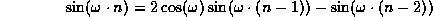
Letting
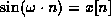
and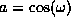
yields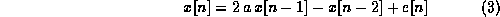
where
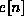
is the estimation error or additive noise. When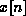
consists of multiple sinusoids, includes the sum of the additional sinusoidal terms. We apply LMS with step size to minimize and estimate :
to minimize and estimate :
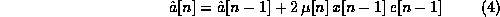
From equations (3) and (4), the LMS filter output is
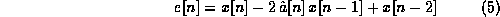
For a fixed step size of
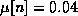
, the NDFET algorithm in equation (5) converged within 20 samples (2.5 ms) for each of the eight single tones used in DTMF signals.This algorithm can be expanded for signals including more than one sinusoid [5][4]:
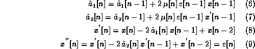
We use a periodic adaptive step size
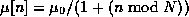
where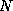
is the period and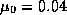
.